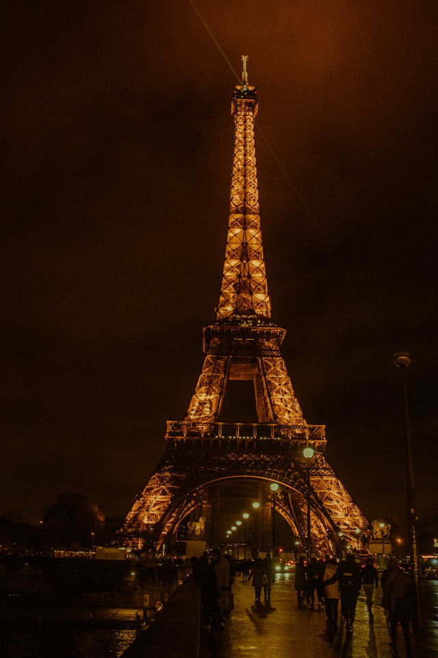
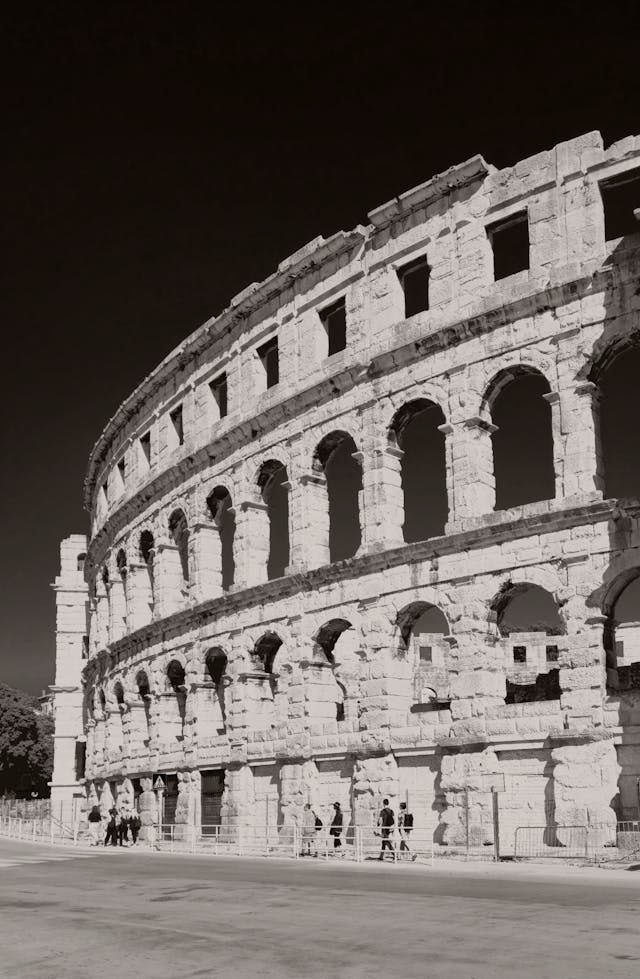
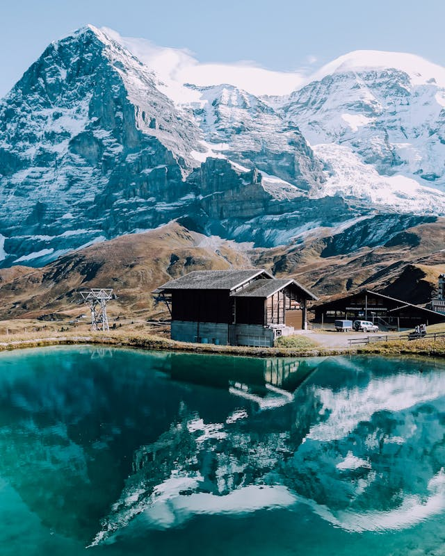

Um experiência única
Explore a Europa como nunca antes com a Euro Tour. Nossa agência de viagens é especializada em pacotes exclusivos e sob medida para este incrível continente! Deixe-nos levar você a uma jornada inesquecível pelos encantos históricos, culturais e naturais que a Europa tem a oferecer. Então, o que você está esperando? Entre em contato conosco hoje mesmo e comece a planejar a viagem dos seus sonhos para a Europa com a Euro Trip. Sua aventura europeia espera por você!
Paris
Visitar a Torre Eiffel é mais do que uma simples parada turística, é uma experiência que transcende o tempo e o espaço. Ao subir em seus elevadores ou desafiar os degraus, o coração acelera enquanto se contempla a vista panorâmica da Cidade Luz, com seus telhados pontilhados de monumentos históricos e suas ruas cheias de vida. É um momento que fica gravado na memória, uma experiência que cativa os sentidos e inspira uma profunda apreciação pela beleza e pela majestade que a Torre Eiffel representa.
Coliseu
Adentrar o Coliseu é embarcar em uma jornada através dos séculos, imerso na grandiosidade e na história que ecoam por entre suas antigas paredes de pedra. Diante da grandiosidade da arena, é impossível não se deixar envolver pela atmosfera única que ainda paira sobre o local, uma mistura de admiração e reverência por uma das construções mais emblemáticas da história da humanidade.
Suíça
Explorar a Suíça é mergulhar em um cenário de conto de fadas, onde picos nevados se erguem majestosamente sobre vales verdejantes, lagos cristalinos refletem a serenidade dos Alpes e vilarejos pitorescos parecem saídos de um cartão-postal. Cada curva da estrada revela uma nova paisagem de tirar o fôlego, enquanto trens panorâmicos serpenteiam por entre montanhas cobertas de neve.